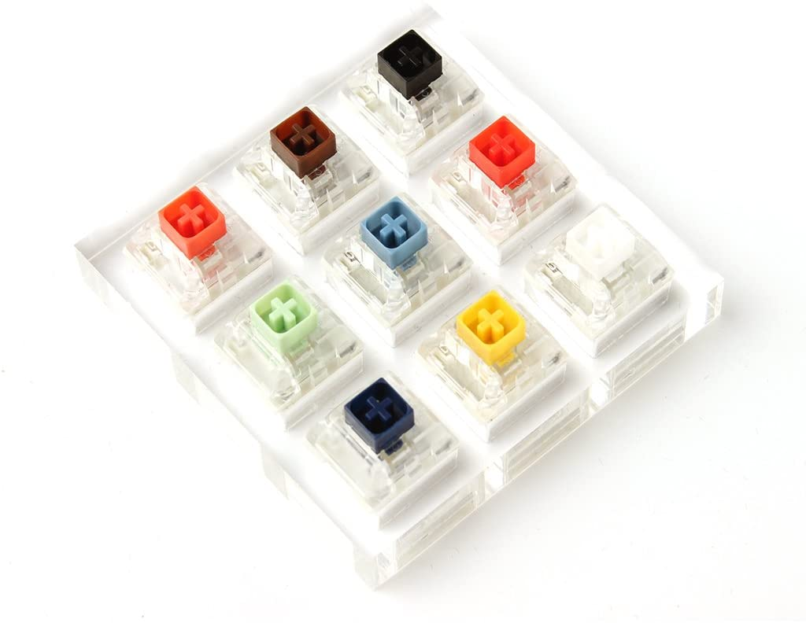

Brytere
Datatastaturer kan klassifiseres etter bryterteknologien de bruker. Datamaskinens alfanumeriske tastaturer har vanligvis 80 til 110 holdbare brytere, vanligvis en for hver tast. Valget av bryterteknologi påvirker nøkkelrespons (den positive tilbakemeldingen om at en tast har blitt trykket) og forhåndsreise (avstanden som trengs for å trykke på tasten for å legge inn et tegn pålitelig). Noen nyere tastaturmodeller bruker hybrider av forskjellige teknologier for å oppnå større kostnadsbesparelser.
Rubber dome brytere eller Laptop brytere
Dome-switch tastaturer er en hybrid av flatpanelmembran og mekaniske switch-tastaturer. De bringer to kretskortspor sammen under et gummi- eller silikontastatur ved hjelp av metall "dome" -brytere eller polyuretanformede kupler. Metallkuppelbryterne er dannede deler av rustfritt stål som, når de komprimeres, gir brukeren en skarp, positiv taktil tilbakemelding. Disse metalltypene på kuppelbrytere er veldig vanlige, er vanligvis pålitelige i over 5 millioner sykluser, og kan plates i enten nikkel, sølv eller gull. Gummikuppelbryterne, ofte referert til som polydomer, er dannet polyuretankupler der den indre boblen er belagt med grafitt. Mens polydomer vanligvis er billigere enn metallkupler, mangler de skarpe snap av metallkuplene, og har vanligvis en lavere levetidsspesifikasjon. Polydomes regnes som veldig stille, men purister har en tendens til å finne dem "grøtete" fordi den kollapsende kuppelen ikke gir like mye positiv respons som metallkuppler. For enten metall eller polydomer, når en tast trykkes ned, kollapser den kuppelen, som forbinder de to kretssporene og fullfører tilkoblingen for å komme inn i tegnet. Mønsteret på PC-kortet er ofte gullbelagt. Begge er vanlige bryterteknologier som brukes i massemarkedstastaturer i dag. Denne typen bryterteknologi er tilfeldigvis mest brukt i håndholdte kontrollere, mobiltelefoner, bilindustri, forbrukerelektronikk og medisinsk utstyr. Dome-switch-tastaturer kalles også direkte-switch-tastaturer.
Mekaniske brytere
Hver tast på et tastatur med mekanisk bryter inneholder en komplett bryter under. Hver bryter er sammensatt av et hus, en fjær og en stilk, og noen ganger andre deler som et separat taktilt blad eller en klikkbar. Brytere kommer i tre varianter: "lineær" med jevn motstand, "taktil" med en ikke-hørbar bump, og "clicky" med både en bump og en hørbar klikk. Avhengig av fjærens motstand krever nøkkelen forskjellige mengder trykk for å aktivere og bunnen ut. Stilkenes form, så vel som bryterhusets utforming, varierer aktiveringsavstanden og kjøreavstanden til bryteren. Mengden lyd som produseres ved aktivering kan også endres ved tilsetning av gummidempere. Som andre typer tastaturer, tillater mekaniske tastaturer å fjerne og bytte ut tastaturlokk, men å erstatte dem er mer vanlig med mekaniske tastaturer på grunn av vanlige stilkformer. Mekaniske tastaturer har vanligvis lengre levetid enn membran- eller dome-switch-tastaturer. Cherry MX-brytere har for eksempel en forventet levetid på 50 millioner klikk per bryter, mens brytere fra Razer har en nominell levetid på 60 millioner klikk per bryter.
Den viktigste nåværende produsenten av mekaniske brytere er Cherry. Alps Electric, en tidligere storprodusent, avsluttet produksjonen på begynnelsen av 2000-tallet, men Alps-stilbrytere blir fortsatt laget av andre selskaper som Matias, Xiang Min (XM), Tai-Hao (APC) og Hua-Jie (AK). bryterprodusenter inkluderer Gateron, Kaihua (Kailh), Gaote (Outemu), Greetech, TTC og Omron.
Deler av mekaniske brytere

Før vi graver inn i de forskjellige brytertyper, la oss få det grunnleggende ut av veien. En konvensjonell mekanisk bryter kan deles inn i følgende nøkkeldeler, bestilt fra topp til bunn:
- Keycap.
- Topplokket i plast med bokstavtrykk.
- Stilk.
- Dette er hva nøkkelkappen er montert på. Formen på stilken er forskjellig fra bryter til bryter.
- Bytt hus.
- Saken som holder alle komponentene sammen.
- Glidebryter.
- Glideren skyver mot fjæren og avbryter forbindelsen mellom metallkontaktbladene montert på siden av bryteren.
- Blader av metallkontakt.
- Dette er det som registrerer et tastetrykk når de treffer hverandre.
- Spring.
- Fjæren brytes rundt bunnen av glidebryteren og skyver bryteren tilbake i hvilestilling etter utløsing
Populare brytere
CherryMX
Razer
Helt siden 2014 har Razer produsert mekaniske brytere for tastaturene internt. De resulterende bryterne er responsive, komfortable og uten tvil mer holdbare enn Cherry-nøkler. I testene mine har de alltid falt litt utenfor autentiske Cherry MX-brytere, men de er fortsatt et langt syn bedre enn Razers gamle membranmodeller. Razer Orange-brytere er et roligere alternativ til De Grønne, med en litt lavere aktiveringskraft på 45 g. Oransje brytere er taktile, men gir knapt noen lyd, noe som gjør dem bedre egnet for kontormiljøer eller hjem med lette sviller. Razer Yellow bytter primært FPS-spillere. I motsetning til de grønne og oransje bryterne, er Razer Yellows lineære. De krever 45 g aktiveringskraft. Razer sier mangelen på en taktil støt vil gjøre gule mer attraktive for spillere som trenger å trykke nøklene kraftig og ofte.
Logitech
Logitech konstruerte sine proprietære Romer-Gs fra bunnen av for å tilby nøkkelbrytere som vil være til fordel for spillere spesielt. (Kirsebær, som både fans og motstandere har påpekt, har alltid vært designet med tanke først og fremst.) En taktil, stille bryter som krever 45 g aktiveringskraft, Romer-Gs ligner på Cherry MX Browns, men våren tilbake litt raskere.
Nyere Logitech-tastaturer bruker enten GL- eller GX-brytere, som varierer i stil og følelse, avhengig av hvilken type du får. GL-brytere bruker tynne nøkkelord, mens GX-brytere er litt mer tradisjonelle. Navnene som er lagt til hver bryter - lineær, taktil, klikkende og så videre - vil hjelpe deg med å bestemme hvordan tastene føles og høres ut.
Khalih
Mange andreleders perifere selskaper holder kostnadene lave ved å bruke Greetech- eller Kailh-brytere i stedet for Cherry MX-er. Greetech og Kailh er begge billige kinesiske brytermerker. Jeg nøler med å si "billig", fordi begge merkene føles bra; de er bare ikke premiumprodukter. Greetech og Kailh-brytere imiterer vanligvis kirsebærfarger og stiler, noe som betyr at en Greetech Red vil føles som en Cherry MX Red, en Kailh Brown vil føles som en Cherry MX Brown og så videre. Hvis du har pengene, vil jeg anbefale å gå til en periferiutstyr med autentiske Cherry MX-brytere. Men hvis det ikke er et alternativ av en eller annen grunn (Cherry-brytere er ofte mangelvare, blant annet), gjør Greetech og Kailh akseptable erstatninger.
Gateron
Gateron har dusinvis av brytere tilgjengelig i oppstillingen, inkludert standard rød, blå, brun, grønn, svart, gul bryter og deres egne unike Gateron melk, blekk, lavprofil og stille bryterdesign.
Uansett hvilken type Gateron-bryter, kan du være trygg på at du får en levetid på 50 millioner tastetrykk for hver bryter. Gateron er kjent for å ha noen av de jevneste tastetrykkene på markedet. Med 20 års erfaring med å produsere brytere, er Gateron MX-stil SMD-LED-kompatibel bryter kjent for sin pålitelighet med en levetid på 50 millioner tastetrykk for hver bryter. Derfor har vi innlemmet Gateron-brytere i hele produktlinjen vår og har blitt anerkjent av mange store påvirkere og medier, inkludert Marques Brownlee, The Next Web, Cult of Mac og CNN etc.